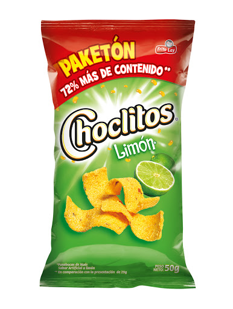

Análisis de las actitudes, formación y cambio
Modificación de las actitudes del consumidor
En esta entrada veremos algunas estrategias utilizadas para modificar el comportamiento de los consumidores para responder la siguiente pregunta:
¿Cuál es el papel de la imagen y publicidad de una marca al tratar de modificar el comportamiento de los consumidores?
La estrategia de modificar las actitudes de los consumidores no es una tarea fácil. Los consumidores se resisten a aceptar cualquier acción que pueda ser diferente a las actitudes o creencias a las que se han adaptado. Sin embargo, la publicidad tiene el poder de cambiarlo todo, desde la forma en la que hoy nos comunicamos hasta la manera en que consumimos jugo de naranja todas las mañanas como parte de nuestro desayuno.
Así pasó alguna vez con los agricultores de California quienes no estaban vendiendo sus naranjas y decidieron acercarse a una agencia publicitaria para resolver este problema que amenazaba su negocio.
 Ellos no crearon una campaña publicitaria típica para promover el consumo tradicional, sino que
decidieron cambiar el comportamiento de los consumidores. Su campaña invitó a tomar las naranjas
como jugo, creando un exprimidor de naranjas y destacando los beneficios del zumo. Con esto, el
negocio de las naranjas cobró vida nuevamente.
Ellos no crearon una campaña publicitaria típica para promover el consumo tradicional, sino que
decidieron cambiar el comportamiento de los consumidores. Su campaña invitó a tomar las naranjas
como jugo, creando un exprimidor de naranjas y destacando los beneficios del zumo. Con esto, el
negocio de las naranjas cobró vida nuevamente.
Modificación de las creencias sobre los productos
Esta estrategia se concentra en el cambio de actitudes o percepciones acerca de la marca en sí. Esta es la más común en publicidad. Los publicistas constantemente nos están recordando que su producto tiene “más”, “mejor”, o es “el mejor”, en términos de algún atributo importante del producto.
 Un ejemplo de esto lo podemos observar en el diseño de algunos paquetes de pasabocas en los que se tiene la creencia que la mayor parte del contenido de la bolsa es aire y hay muy poco producto en su interior. Para esto, las marcas utilizan en el diseño del empaque la etiqueta de “Más contenido”. De esta manera, el comprador cambiará esa creencia y pensará que ahora el paquete es mejor porque contiene más producto.
Modificación de la imagen de marca
Esta estrategia es utilizada por los mercadólogos al presentar promociones diseñadas para establecer una diferenciación entre su marca y la de la competencia. Para intentar modificar la valorización respecto a la marca recuerdan que “ésta es la marca de mayor venta” o “la marca que todos los demás tratan de imitar”.
Un ejemplo de esta estrategia en publicidad es la marca de crema dental Colgate, la cual dice ser “La marca N°1 recomendada por odontólogos”. De esta manera, los consumidores se sienten seguros comprando esta marca específicamente pues las demás no las recomiendan los profesionales en salud dental.
Modificación de las creencias sobre las marcas competidoras
Esta estrategia involucra el cambio de creencias del consumidor sobre los atributos de las marcas de la competencia. Esta estrategia puede usarse si se tiene precaución, de otro modo, podría resultar en contra puesto que hace visibles las marcas y afirmaciones de los competidores.
Un ejemplo de esto, es la fuerte lucha que se ha dado entre CocaCola y Pepsi. La rivalidad que existe entre estas dos marcas de bebidas es tan antigua como sus comienzos en el sector. Anteriormente, podíamos destacar sus críticas y burlas en contra del otro tanto los anuncios o spot publicitarios, como guerras en la vía pública con cartelería o incluso en lugares donde se localizan sus máquinas dispensadoras de refrescos.
Reflexiones finales
La publicidad juega un papel clave para la modificación del comportamiento del consumidor. Pero no es solo el hecho de publicitar, sino de utilizar una estrategia creativa que cree esa diferenciación entre marcas y persuada al consumidor de cambiar una costumbre o un comportamiento con respecto a otra marca.
Además, pienso que la publicidad emocional es clave para fidelizar al consumidor, que este se sienta identificado con la marca y que no quiera probar nuevas alternativas. Para lograr esto, es necesario lograr que el consumidor se involucre con el producto y muestre sentimiento positivos hacia él.
Referencias
Medina, A. (2015). Behavior Change: Publicidad para cambiar al consumidor. Alto Nivel. https://cutt.ly/hgsmhdl
Formación y cambio de actitudes del consumidor. (2006). Mongolian Journal of Biological Sciences, 4(1), 1-27. https://doi.org/10.22353/mjbs.2006.04.06
Joseph, L. (2015). Comportamiento del consumidor. (11a. ed.) Pearson Educación. Tomado de http://www.ebooks7-24.com.ezproxy.eafit.edu.co/?il=3468